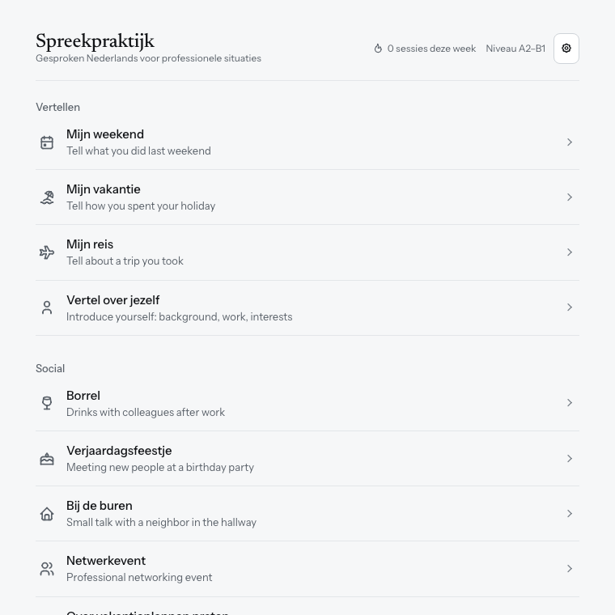
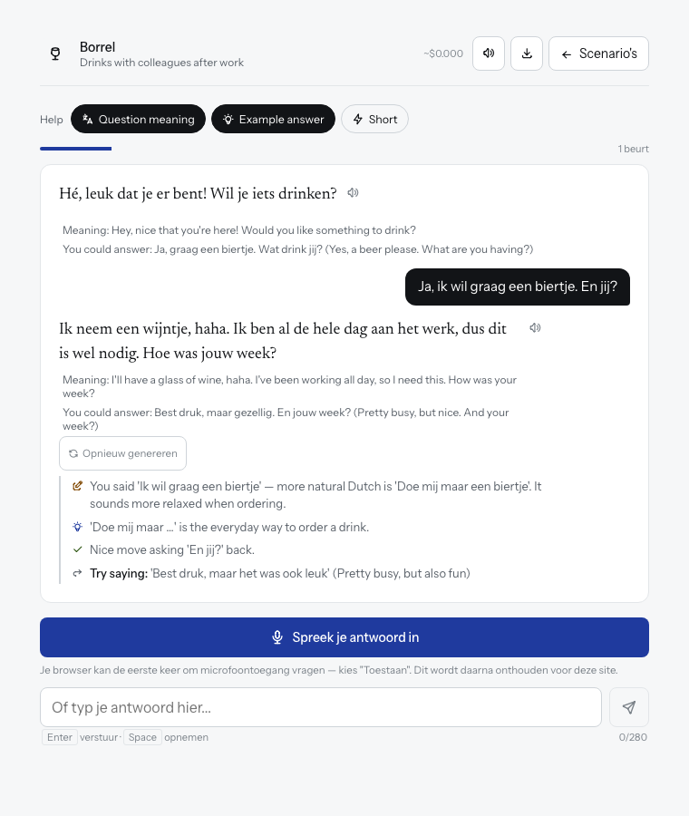

Spreekpraktijk
Pick a situation, like drinks with colleagues or a visit to the town hall, and talk with an AI partner. After each reply you get short feedback in English. Made for A2–B1.


A browser (Chrome or Edge works best) and your own API key from Google Gemini, OpenRouter or Anthropic. A short conversation costs a fraction of a cent. You'll be asked for the key when you start. It stays in your browser and is never stored or used by this website.